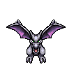
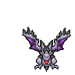
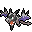
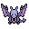

Pokédex / #142

Aerodactyl #142
RockFlying
It was regenerated from a dinosaur's genetic matter that was found in amber. It flies with high-pitched cries.
Generation 1 · Kanto

Stats
| Attack | 105 | |
|---|---|---|
| Defense | 65 | |
| Sp. Atk | 60 | |
| Sp. Def | 75 |
In the wild
| Wild level | 100–100 |
|---|---|
| HP | 80 |
| Experience | 17 |
| Egg groups | – |
Evolution
- It Mega Evolves into Mega Aerodactyl while holding the Aerodactylite.
Mega Evolution


Mega Aerodactyl
RockFlying
Mega Evolution of Aerodactyl holding the Aerodactylite
| Special ability | Tough Claws |
|---|---|
| Attack | 135 +30 |
| Defense | 85 +20 |
| Sp. Atk | 70 +10 |
| Sp. Def | 95 +20 |
Wear the Mega Ring and give the Pokémon its stone to hold; the form lasts 60 seconds. Mega forms have no Pokédex entry of their own.
Moves
| Level | Move | Type | Category | Power | Energy | Cooldown | Effect | |
|---|---|---|---|---|---|---|---|---|
| 1 | Tackle | Normal | Physical | 15 | 15 | 1s | Tackle is one of the most common and basic moves a Pokemon learns. It deals damage with no additional effects. | |
| 5 | Ice Fang | Ice | Physical | 65 | 65 | 10s | Ice Fang deals damage and has a 10% chance of freezing the target, plus a 10% chance of causing the target to flinch. | |
| 10 | Fire Fang | Fire | Physical | 65 | 65 | 10s | Fire Fang deals damage and has a 10% chance of burning the target, plus a 10% chance of causing the target to flinch. | |
| 15 | Thunder Fang | Electric | Physical | 65 | 65 | 10s | Thunder Fang deals damage and has a 10% chance of paralyzing the target, plus a 10% chance of causing the target to flinch. | |
| 20 | Wing Attack | Flying | Physical | 60 | 70 | 14s | Wing Attack inflicts damage and has no secondary effect. | |
| 25 | Sky Drop | Flying | Physical | 60 | 70 | 20s | The user takes the target into the sky, then drops it during the next turn. The target cannot attack while in the sky. | |
| 30 | Rock Slide | Rock | Physical | 38 | 85 | 17s | Rock Slide deals damage and has a 30% chance of causing the target to flinch. | |
| 35 | Ancient Power | Rock | Special | 60 | 70 | 14s | Ancient Power inflicts damage and has a 10% chance of raising all of the user's stats by one stage. | |
| 40 | Bite | Dark | Physical | 60 | 60 | 9s | Bite deals damage and has a 30% chance of causing the target to flinch. | |
| 45 | Scary Face | Normal | Status | 1 | 40 | 15s | Scary Face lowers the target's Speed by two stages. | |
| 50 | Crunch | Dark | Physical | 80 | 80 | 12s | Crunch deals damage and has a 20% chance of lowering the target's Defense by one stage. | |
| 55 | Supersonic | Normal | Status | – | 20 | 14s | Supersonic causes the target to become confused. | |
| 60 | Iron Head | Steel | Physical | 80 | 80 | 12s | Iron Head inflicts damage and has a 30% chance of causing the target to flinch. | |
| 65 | Hyper Beam | Normal | Special | 150 | 160 | 34s | Hyper Beam deals damage but the user can't attack on the next turn. | |
| 70 | Giga Impact | Normal | Physical | 150 | 160 | 34s | Giga Impact deals damage but the user can't attack on the next turn. |
Field abilities
StrengthFindFlyHeadbutt
Special abilities
Rock HeadPressure
Egg moves
AssuranceCurseDragon BreathForesightPursuitRoostSteel WingTailwindWhirlwindWide Guard
Technical machines
Aerial AceBideDouble EdgeDouble TeamDragon ClawDragon RageEarthquakeFire BlastFlamethrowerHyper BeamIron TailMimicRageRain DanceRazor WindReflectRestRoarRock SlideRock TombSandstormSky AttackSoftboiledSteel WingSubstituteSwiftTake DownTauntToxicWhirlwind
Drops
| Item | Amount | Chance | |
|---|---|---|---|
| Stone Plate | 1 | 0.1% | |
| Sky Plate | 1 | 0.1% | |
 | aerodactyl doll | 1 | 0.1% |
| TM 45 | 1 | 0.01% | |
| held hard stone | 1 | 0.01% | |
| held sharp beak | 1 | 0.01% | |
| aerodactylite | 1 | 0.0004% |